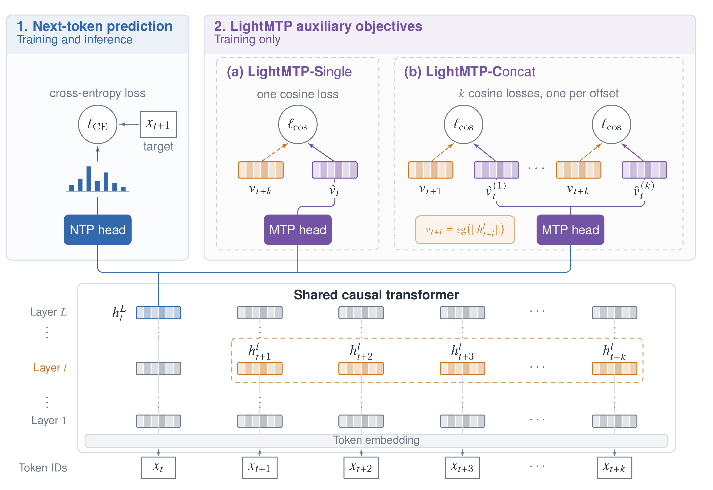
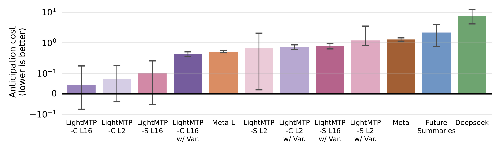
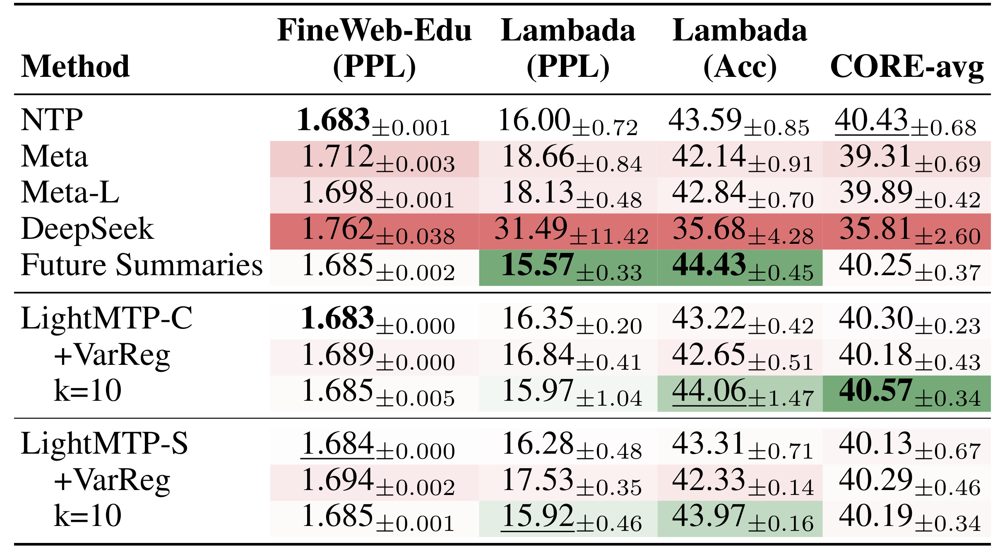
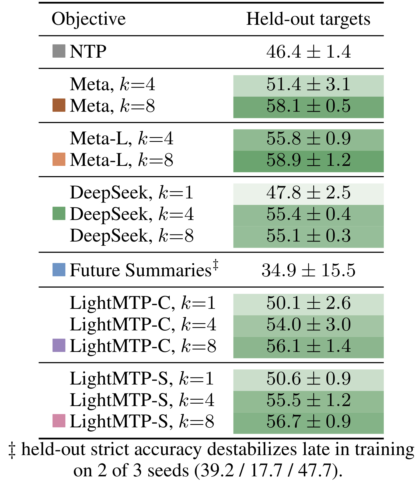
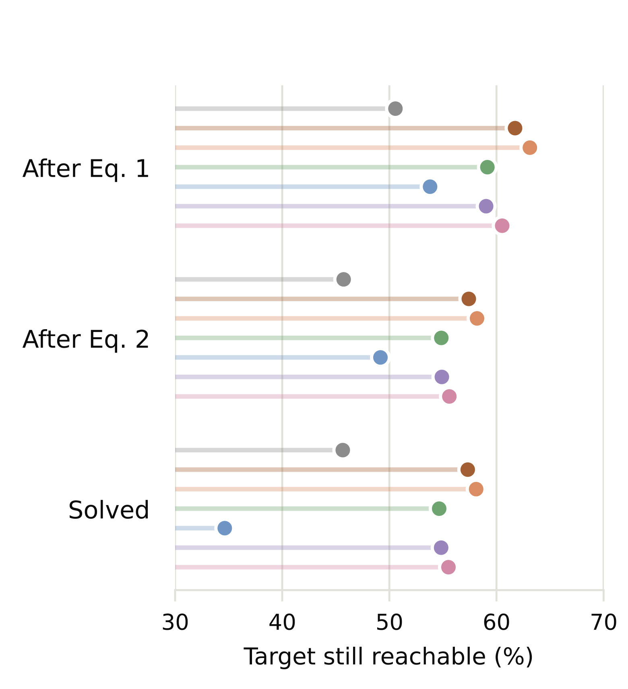
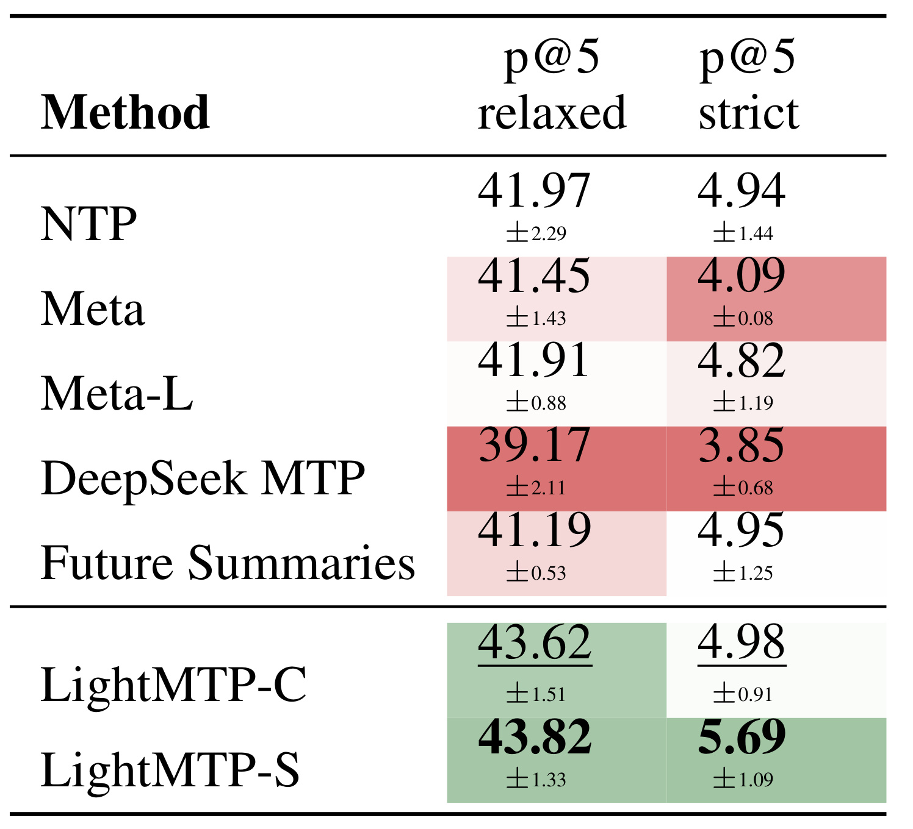
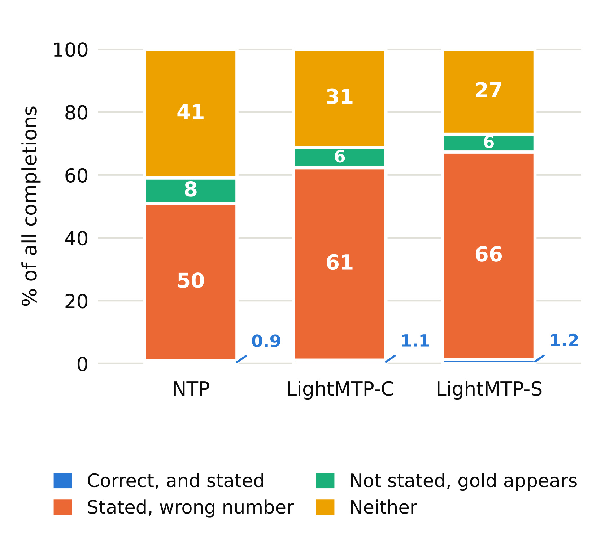
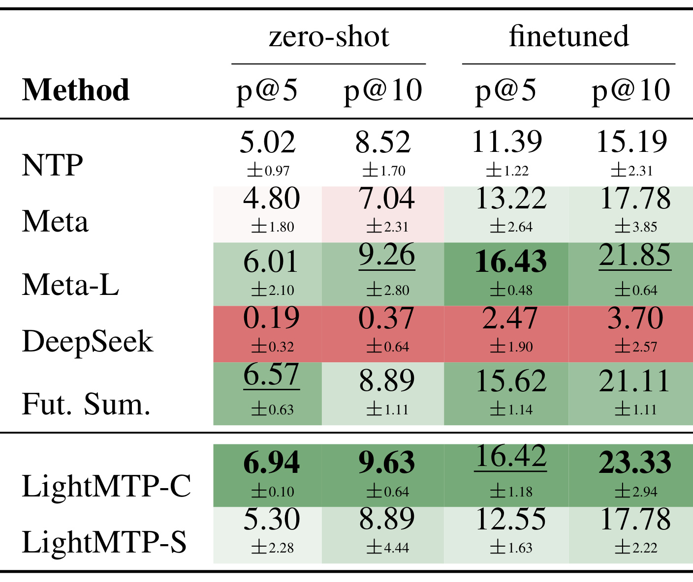
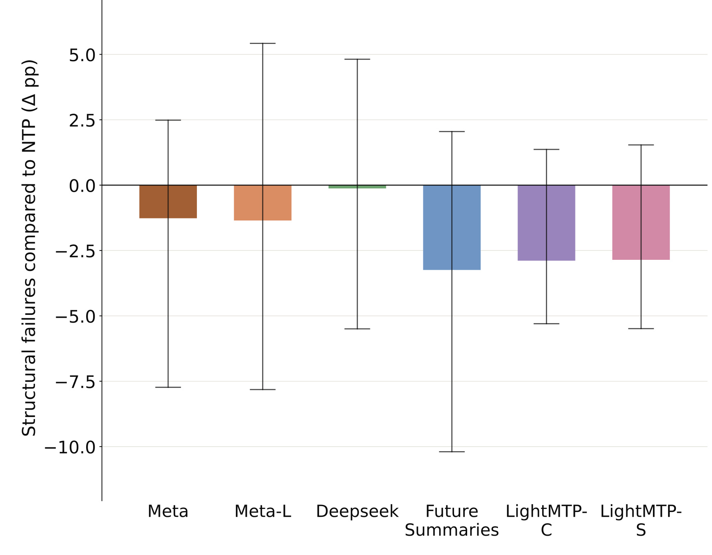

LightMTP：用自身未来隐状态训练轻量多词预测
- 论文：LightMTP: Lightweight Latent Multi-Token Prediction
- 作者：Tamara Czinczoll、Julie Kallini、Gerard de Melo、Chen Shani。
- 第一作者主要机构：Hasso Plattner Institute / University of Potsdam；合作机构：Stanford University、Tel-Aviv University。
- 首发：2026年10月5日09:30:30 UTC，即北京时间17:30:30；版本：arXiv v1。
- 唯一论文入口：LightMTP。访问核验：2026年10月7日北京时间。
- 代码/项目页：未核验到独立代码或项目页。以下数值来自论文主文与附录，属于作者报告，未独立复现实验。
1. 背景和问题
下一词预测只显式监督紧接着的词，可能让模型依赖局部模式而忽略更长程结构；已有多词预测又常引入大量参数，带来的下游收益却有限。
这段问题陈述来自论文摘要与引言。作者并没有声称下一词预测完全不能学习未来，更没有否定自回归语言建模的有效性。下一词预测在每个位置都计算交叉熵，利用原始文本即可获得监督，还能在一次教师强制前向传播中并行处理整段序列。它的局限是，远处的信息只有在帮助预测下一词时，才会被这个位置的表示显式利用。例如数学解题中，当前算式可能在局部语法上完全正确，却消耗了后面达到目标必需的数字；代码中，一个变量名的局部续写很常见，却与稍后使用的名称不一致。这些结构性依赖是作者提出额外未来监督的动机，而不是把所有错误都归结为缺少多词损失。
理解这项工作，首先要区分训练时的监督跨度与生成时的输出跨度。标准模型仍可以通过逐词生成写出长答案，LightMTP也仍然逐词生成；变化发生在预训练中：位置上的最终隐状态除了服务下一个词，还要预测未来位置的表示。这样，模型在获得当前位置奖励之前，就必须保留与后续内容有关的线索。论文希望检验的是这种压力是否能形成更好的局部前瞻能力，以及这种能力会不会以损害通用语言建模为代价。把它描述为一次输出多个词的推理算法，会混淆论文最核心的实验问题。
词级多词预测已经提供一种直接办法：为多个未来偏移量各建预测模块，输出词表上的概率分布。它强化了未来目标，但每个偏移都可能需要昂贵的词表投影，有些设计还加入一层额外Transformer。词表很大、隐层很宽、预测距离增多时，参数、激活、梯度与训练计算都随之增加。共享输出矩阵能够缓解部分开销，却不自动解决额外模块或输出计算的成本。作者还指出，以往结果在约三十亿参数以下常出现性能下降。因此，对中小模型来说，一个未来监督目标即使能提高规划题表现，也未必值得替换稳定的下一词预训练。
潜空间多词预测改变了监督对象：不要求准确说出每个未来词，而要求预测稠密表示。由于语义上合理的未来可能有多种具体词形，这种表示监督可以避免过早承诺某一离散词。然而，以往潜空间方案往往需要额外自编码器、码本或辅助语言模型来形成目标。额外目标模型不仅增加参数，还带来训练阶段、目标质量和同步更新等问题。LightMTP的主张很具体：目标直接取自同一个因果模型在未来位置的中间层隐状态，用一个小预测头从当前位置猜测它。 因此，它省掉独立教师及多次词表映射，但仍保留一条能塑造主干表示的训练路径。
这与对未来表示做简单蒸馏有一个重要区别。目标会随着主干共同演化，它并不是预先固定的正确语义标签。模型可以学出有信息的未来状态，也可能找到容易预测却没有内容的表示。因此，自举降低外部依赖的同时，也引入目标退化的风险。作者加入停止梯度，使预测误差不能沿目标分支直接把未来状态拉向预测；又试验序列内方差正则，鼓励不同位置方向分散。但这些操作只能约束优化行为，不能证明未来目标与下游能力之间必然一致。后面方差正则的负面结果，正好说明这一点。
论文还与NextLat做出区别：后者预测下一个状态时，可以使用下一个真实词来建模转移；LightMTP只看当前位置的最终隐状态，不能读中间真实词，一次调用预测头即可预测远处单点或多个偏移。这让辅助任务更像从前缀进行预期，而不是给定后续词的状态转移拟合。与从右到左教师获取未来摘要的Future Summaries相比，LightMTP没有外部逆向模型，但其目标仍是未来位置因果状态，包含该位置之前真实词提供的上下文。这种训练目标的可见信息与推理输入的可见信息不同，需要依靠位置、掩码与停止梯度防止信息直接泄漏给当前预测支路。
从研究价值看，本文不是追求最强大模型或最新推理排行榜，而是在一个容易被忽略的规模区间提出可控的目标函数实验。主实验采用二十四层、约十四到十五亿参数的从零训练模型，并考察十二层和十八层配置。评测从隐状态探针逐步推进到普通语言建模、四数字算术规划、数学输出格式及代码结构错误。这个顺序值得学习：先问监督是否改变表示，再问改变是否损害主任务，最后问是否改善特定行为。它避免仅凭辅助损失下降就宣布模型具备规划能力。
阅读时也要保留两个边界。第一，“至多增加百分之一参数”指本文配置中的小辅助头，不能自动换算成同幅度的墙钟时间、显存或能耗增量，未来隐状态的保留与回归也有成本。第二，基线的训练词元预算随参数量变化，较大的多词预测基线看到更多词元。作者这样做是为了避免新增参数训练不足，但比较并非严格固定计算预算，也不是所有模型看到完全相同文本量。真正有说服力的结论是，在这套训练配方与规模下，LightMTP提供较好的未来监督和语言建模折中，而不是已经证明任何资源约束下都最优。
作者所说的轻量还涉及监督来源的简化：无需先训练另一套编码器，再维护它与当前模型的语义对齐。但这种简化不会消除目标选择问题。选第十六层而非最终层，是把表示目标的内容与下一词输出层作一定区分；浅层、深层和更长跨度可能各有不同预测难度。本文选择依靠实测结果而非理论界保证这种设置，读者应把它看成可调整的设计空间。若真实任务不需要局部结构一致性，未来监督产生的额外梯度也可能没有价值。
2. 方法
2.1 潜空间预测头与训练目标
原文第三章第一节从共享因果主干出发。深度为L的Transformer把前缀映射成各层隐状态，最终层状态进入线性下一词头，也同时进入单独参数化的两层MLP未来预测头。预测头使用GELU非线性，其输出不必穿过词表矩阵。输入是当前最终层状态，输出是未来目标层的一个或多个稠密向量；这使监督信息必须由当前前缀表示承担，而不能直接使用未来词作为预测头输入。目标层可以从嵌入层到最终层中选择，主实验取二十四层模型的第十六层，即约三分之二深度。更浅目标层只用于部分探针分析，并非主文下游结果都混合不同目标层。

Figure 1把训练与推理的边界画得非常清楚：左侧蓝色下一词头在两个阶段都使用，右侧紫色未来预测支路只用于训练。底部因果主干对同一段输入产生各位置、各层隐状态，橙色框中的未来中间层表示承担目标，当前位置最终层状态则承担预测输入。虚线目标箭头和实线预测箭头不能理解为两条都反向更新的对称分支；未来目标必须停止梯度，否则模型可以通过改变答案来降低回归误差。单目标分支只面对距离为指定跨度的一个向量，拼接分支面对多个偏移的向量，图里的多个损失来自同一次预测头调用的不同输出切片，并非逐步滚动生成。读者也应注意，橙色未来表示是在教师强制训练中计算出来的，当前位置的因果状态仍只能访问前缀，主干并没有改成双向注意力。这张图体现的训练收益路径是辅助损失改变共享参数，进而改善常规生成时的状态；它并不提供投机解码候选，也不需要在推理时保留紫色头。对于实现者，核对预测头输入、目标梯度屏障、目标层索引和跨文档掩码，比只照着图增加一个MLP更重要。
作者把预测向量与目标向量归一化，用余弦距离比较方向，而不是要求其原始幅值也相同。这样可以减少层尺度差异对回归的影响，监督重心放在表示方向携带的语义上：
符号解释：预测向量为 $\hat v$，未来目标为 $v$，$\|\cdot\|_2$ 是欧氏范数。方向完全一致时损失为零，反向时损失更大；归一化后不再奖励单纯增加向量长度。原文公式一用一般余弦形式，即使先归一化也保留范数写法。 目标来自自身主干，会产生一个潜在捷径：不同位置都输出很相似的方向，未来预测就变得容易。下一词损失本身要求区分词与上下文，对退化有一定约束，但作者额外测试VarReg。它先对目标层各位置单位化，再计算每条序列的方向均值：
符号解释：$b$ 是批中序列编号，$B$ 为批大小，$T$ 为序列长度，$l$ 为目标层，$\bar h^l_b$ 是该序列单位状态的均值。原文惩罚均值的二范数，并未在公式二写平方，不能擅自改成平方范数。均值长度较大意味着许多位置共享同一方向；减小它鼓励方向分散，却不等同于逐维方差下界，也不保证每个状态都包含正确未来信息。 整体训练目标保留下一词交叉熵，并加上未来回归和可选正则：
符号解释：$\mathcal L_{\mathrm{NTP}}$ 是常规词表交叉熵，$\mathcal L_{\mathrm{MTP}}$ 随两个变体分别定义，两个 $\lambda$ 调节辅助目标权重；VarReg开启时本文使用权重零点一。停止目标梯度不会停止主干学习：预测头输入仍依赖主干，误差会通过这一侧更新主干参数。未来目标也会在下一次训练步骤随主干变化，只是在当前损失求导时当常量处理。
2.2 单目标未来向量预测
LightMTP-S对应原文第三章第二节，预测头输出与主干隐状态同宽的一个向量。它把当前位置最终层状态映射为未来第k步目标层状态的估计，因而输出维度不随预测跨度增长：
符号解释：$g_\phi$ 是辅助MLP，$\phi$ 是其参数，$h^L_t$ 为位置 $t$ 的最终层状态，$h^l_{t+k}$ 为未来位置在目标层的状态，$k$ 为预测偏移，停止梯度只作用在目标支路。预测头没有接收未来的真实词，目标却是未来词所在位置的因果上下文化表示，因此目标通常同时含有附近上下文和该位置内容。 单目标回归在有效位置上取平均：
符号解释：$T-k$ 为原文公式五在一条长度为 $T$ 序列中的有效起点数，末尾没有足够未来目标的位置不参加这一项。实际打包数据还必须考虑文档边界，不能把后一个文档的状态当成前一个文档的未来；这个约束来自附录数据管线和第三章第三节的有效目标原则。 这里的“单目标”很容易被误读成未来k个词的摘要。原文明确强调，它只是预测第k步的一个上下文化状态，并不把中间所有状态直接聚合成目标。中间信息能否进入该目标，取决于目标层因果表示学习了什么。因此增大k时，头参数可以不变，但监督不确定性会增加：前缀允许的未来分支越多，某一个实际未来方向越难准确恢复。它可能鼓励更稳健的预期，也可能导致模糊的平均预测，需要看探针和下游评测，而不能从公式直接推导远期规划改善。
这种设计适合检验远处单点是否足够塑造主干。论文在Countdown中发现单目标在多个跨度下都优于拼接版本，说明对某些目标到达任务，保持对终点附近表示的关注可能比均匀拟合全部偏移更有效。但代码任务中拼接版本更好，提示语法、局部命名与多位置一致性可能受益于更密集监督。两者差异属于任务依赖的经验结果，并没有在本文被证明为普遍规律。复现时应保留相同主干、目标层与数据配方，再分别观察跨度变化，避免把任务差异与主干差异混在一起。
2.3 拼接多目标未来向量预测
LightMTP-C对应原文第三章第三节，一次调用输出k倍隐层宽度，再沿通道分成k个向量。每个切片预测一个偏移，保留中间全部未来位置的直接监督：
符号解释：$d$ 为隐层维度，分号表示通道拼接，$i$ 为一到 $k$ 的未来偏移，$\operatorname{sg}$ 同停止梯度。原文公式六与七在这里合并展示；每个切片各自单位化，防止不同偏移的向量幅值决定权重。虽然输出一次产生全部切片，但它不是一个精确的未来词联合概率模型，没有显式描述各切片间的联合词分布。 实际训练必须单独处理每个偏移的有效位置：
符号解释：$m_{t,i}$ 为有效目标掩码，同一文档内且未越过序列末尾时为一，否则为零；$\ell_i$ 对该偏移有效位置平均。这样末尾位置仍可以学习尚未越界的小偏移，不必因为缺少最远目标而完全丢弃。原文公式九是对各偏移求和，不能改写成除以 $k$ 的平均。论文说各切片归一化让尺度不依赖k，读实现时仍需区分“单个向量损失幅值”和“所有偏移总损失”：后者求和可能改变总梯度强度，跨度比较应同时记录辅助权重及梯度量级。 拼接版本对未来位置进行密集监督，输出层参数会随k增加；它仍然省去大词表映射，本文实验中辅助参数占比很小。这种预算描述只适用于作者具体隐层、头宽及跨度，不宜推广成任何k都最多百分之一。训练结束后，两种未来头都删除，推理继续通过原来的下一词线性头输出词表概率，主干结构和自回归路径不变。能否利用未来头做另一个加速器是额外研究问题；本文没有实现或评估那种解码路径。
工程上，目标中间层表示在教师强制前向中已经存在，但要为回归保留适当状态、处理归一化并构建各偏移掩码。本文使用打包序列且因果注意力沿打包行计算，未来目标不能跨文档，因此辅助损失与主干注意力掩码并不是同一件事。还应检查有效目标分母在特殊批次是否为零、目标层取值与框架层编号是否一致、停止梯度是否确实生效。本文并未给出这些实现条件的形式保证；它们是根据公式和数据规则推导的复現检查点，不是新增算法模块。
3. 实验结果
3.1 设置与未来信息的成本
主模型二十四层，隐宽一千五百三十六，词表大小三万二千七百六十八，上下文长度二千零四十八，全局批大小五十二万四千二百八十八词元。模型从零训练，通用语料使用FineWeb-Edu；代码实验另外把The Stack第一点二版Python子集混入预训练，占约百分之十。主干与优化配方基于nanochat，采用Muon优化主干矩阵及辅助头，其他参数使用AdamW。默认目标层十六、预测跨度四，下游通常不使用目标层二。NTP安排五个种子，其他配置三个；表中标准差与附录说明存在个别简写，解释时以具体实验配置为准，不能把所有单元格机械归为完全相同重复次数。
预算按缩放参数量乘十二确定训练词元，辅助头算进缩放参数，嵌入等非缩放参数除外。因而Meta-L、Meta、DeepSeek基线分别多看约百分之二十点七、十一点六和十三点六的词元。这个设计对新增大量参数的方法提供更多训练，但同时改变数据量与训练步数。参数效率、语言建模性能与固定GPU时间最优，是三种不同结论。 附录表六提供参数、词元、步骤和GPU小时，可用于理解资源条件；它并没有把主文全部对比转成严格固定FLOPs实验。
未来信息通过冻结最终层状态再训练线性探针来评估，探针任务是在留出FineWeb-Edu片段上预测不同偏移的未来词。这测量线性可解码信息，不等于真实生成时一定使用这些信息。作者观察到，多词目标普遍提高未来位置准确率，同时可能损害下一个词。为概括这种代价，引入预期成本：
符号解释：分子为相对NTP的下一词每字节比特数增加，分母为多个未来偏移的预测准确率收益，较低通常表示以较少即时建模损失换取更多未来信息。这个比率在分母很小时可能敏感，误差条和绝对性能仍需一起看；不能将它解释成实测GPU成本。

Figure 2中排在前四的低成本配置都是LightMTP变体，其中包括目标层十六与二的拼接版本、目标层十六的单目标版本和带方差正则的拼接版本。Meta-L排在其后，Future Summaries与DeepSeek风格基线的成本明显更高，正文描述最高者与最佳LightMTP相差约两个数量级。纵轴的特殊尺度与误差条提醒我们，某些估计包含很小甚至跨零的下一词性能变化，这时把两根柱子的高度换成精确倍率并不稳健。此图支持的主要判断是未来可解码信息与即时预测之间存在折中，而LightMTP在作者训练规模下较靠近低代价区域。目标层二的一些良好柱形也不能直接拿来宣传主文下游性能，因为作者没有用它做全部下游评测。VarReg能改善前瞻探针，却并未成为语言建模最优配置，说明辅助指标更好不能自动决定模型选择。复现者应保留分子分母原始值，分别记录每个偏移的准确率，再计算这个汇总量。
3.2 通用语言建模是否保住

Table 1最强的信号是普通语言建模几乎不退化，而非所有列都压过NTP。FineWeb-Edu列是字节级困惑度，即每字节比特数指数化后的数值，不能与其他常见词元困惑度直接横比。NTP为一点六八三，LightMTP-C也是一点六八三，LightMTP-S为一点六八四；Meta、Meta-L和DeepSeek分别为一点七一二、一点六九八及一点七六二。LAMBADA评估故事最后目标词，需要超出最后一句的上下文，其NTP困惑度十六点零零，默认拼接与单目标分别十六点三五及十六点二八，仍有轻微退化。CORE汇总二十二个任务，NTP四十点四三，默认拼接四十点三零、单目标四十点一三；拼接跨度十达到四十点五七，但与NTP差距只有零点一四。因而作者的“保留甚至改善”应理解为均值和指标组合层面的趋势，不能写成已经统计证明所有通用能力提高。多个单元格的标准差与均值差同量级，公开表格也未给出全面显著性检验。
VarReg的效果更加值得注意。拼接版本加它后FineWeb-Edu从一点六八三变一点六八九，LAMBADA困惑度从十六点三五变十六点八四，目标词准确率从四十三点二二变四十二点六五；单目标加它后困惑度一点六九四、LAMBADA十七点五三，目标词准确率四十二点三三。不是每一项都同方向变化，例如单目标CORE均值略高于其无正则版本，因此“所有下游都下降”也过强。更准确的是主要语言建模指标有稳定负担，探针收益与下游收益出现分离。作者将其解释为梯度干扰或表示竞争，这属于与现象一致的机制假说，本文没有直接提供梯度夹角或因果干预测量。
LAMBADA口径还存在论文内部文字差异：主表caption写验证划分，部分附录完整表caption写测试划分。本笔记采用主表的数值与口径，不擅自把二者当成完全一致的数据设置。正式复现应先核对实际加载划分及最后目标词计分代码，再比较结果。CORE中的LAMBADA也不能当作完全独立的第二次证据，以免重复计算同一个能力维度。
3.3 Countdown：终点正确与路径保留
Countdown让模型用四个数字和基本算术达到指定目标，必须每个输入数恰好用一次、各算式算术正确且最后命中目标。目标在十到一百之间，测试目标从训练中留出，采用贪心解码。这里的严格准确率是完整解的可执行正确率，与GSM8K的答案格式严格匹配不同。

Table 2里NTP达到百分之四十六点四，单目标跨度一、四、八分别为五十点六、五十五点五、五十六点七，拼接对应为五十点一、五十四点零、五十六点一。单目标跨度八比NTP高十点三个百分点；这里说的是百分点，不是相对百分之十点三。Meta-L跨度八取得五十八点九，仍高于LightMTP-S两点二，说明LightMTP没有绝对最高规划分数。论文强调单目标头约一百二十万参数，对照Meta-L约七千五百万，约减少百分之九十八辅助参数，但这些是规划任务设置中的参数，不能未经核对套到二十四层所有主模型。DeepSeek跨度四达到五十五点四，到八略降为五十五点一；Future Summaries平均三十四点九、标准差十五点五，三个种子中两个后期不稳定。因此值得关注的是LightMTP随着跨度扩大较稳定改善，以及很小辅助头获得相近表现，而不是一个单次均值排名。

Figure 3沿着第一条算式、第二条算式、最终求解三个阶段检查目标是否仍可达。每个点表示留出题目中，生成当前算式以后仍存在合法后续路径的题目占比，颜色对应Table 2并使用每种方法最佳跨度。LightMTP的初期和后期可达比例都高于NTP，说明其收益不只来自末尾碰巧输出正确答案；较早选择也更少把自己带入算术死路。这里测量的是“题目仍有至少一条路”的比例，不是剩余路径数量，更不是对模型内部搜索树的直接观察。Future Summaries最初也保留比NTP更多可达题目，随后掉得更厉害，与最终不稳定和低正确率一致。这个过程诊断比单个终点分数更接近规划行为，但仍不能排除模式学习、数据分布适配等解释。不同方法选各自最佳跨度，也意味着图中并非统一跨度、统一预算下的严格匹配对比。若要验证真实远期规划，应继续改变数字数量、目标范围与未见运算组合。
论文采用nanochat主干，与其参照的其他工作主干不完全一致，所以作者特别说明外部Countdown数字不能直接横比。这一限制也提示读者，不要仅通过标题相同的任务就把本表加入跨论文排行榜。可达性诊断在这里提供行为层证据，不能推导出模型具备通用任务规划或自主代理能力。
3.4 数学格式与代码结构
GSM8K评测的是仅在FineWeb-Edu上预训练的基础模型，没有对其训练集再微调；推理提供八个示例。宽松匹配检查正确数字是否在输出任何地方出现，严格匹配检查指定答案格式。两者差距很大，因此要同时看任务理解与格式遵循。

Table 3的NTP宽松通过率为四十一点九七，严格为四点九四；LightMTP-S分别四十三点八二和五点六九，拼接版本分别四十三点六二和四点九八。单目标严格均值提高零点七五个百分点，而其标准差一点零九，不能只把最高均值写成稳健的大幅推理提升。宽松值提高约一点六五到一点八五个百分点，也不能等同于完整推导正确，因为正确数字可能在错误推导中偶然出现。Meta与DeepSeek风格基线在两种口径下都更低，Future Summaries严格接近NTP。表格的价值在于把同样输出用两个计分规则区分：如果辅助目标只帮助生成答案标志，却不增加正确算术，那么严格值可能变化但真正理解未改；如果数字出现变多却仍不遵守输出协议，宽松值又可能掩盖问题。本文的结果同时有轻微数字收益与明显格式分布变化，应该保持这种分层描述。

Figure 4进一步把所有生成样本划成四类：正确且按格式给出、按格式给出但数字错、未按格式给出但出现正确数字，以及两者皆无。NTP、拼接、单目标的“按格式给出但错”大约为百分之五十、六十一和六十六，而完全不符合两者的比例从约四十一降为三十一和二十七。真正正确且按格式给出的那一小段只约零点九、一点一和一点二。由此可见，最明显的变化是模型更常学会示例里的答案表述结构，绝不能把格式遵循增加解释成数学正确率增加十几个百分点。图中单次完成分布与Table 3的pass@5不同，前者描述全部样本比例，后者描述多次采样后通过机会，因此数字不能直接彼此替代。正确数字出现但未按格式输出的类别也下降，符合模型更常把结果写到指定位置的解释。对实际任务，这种结构收益可能有用，但若答案仍然错误，格式漂亮会造成更强的可信错觉。
代码实验更换预训练混合语料，Python约占百分之十，然后分别报告零样本与MBPP训练集微调后的表现，不能与前述纯文本模型混为一套权重。评测使用MBPP开放验证集，附录给出九十道题、每题十个样本及三种种子，相关失败分析温度为零点七。

Table 4中LightMTP-C的零样本pass@5为六点九四，对照NTP五点零二，提高一点九二个百分点；pass@10为九点六三，对照八点五二。微调后拼接版本pass@5为十六点四二，Meta-L十六点四三，实质接近；拼接pass@10为二十三点三三，对照NTP十五点一九，提高八点一四个百分点。单目标微调pass@10为十七点七八，虽高于NTP但明显低于拼接。代码更依赖局部位置间语法和命名一致性，这与密集偏移监督可能更有帮助的假说相容，但本文没有隔离证明这一因果关系。DeepSeek风格基线零样本几乎为零，微调后也明显落后，表明本文实现和规模下其迁移不佳；不能据此推断DeepSeek大规模原模型编码能力差，因为本文采用了调整后的基线结构与完全不同的数据和训练规模。多采样通过率也不等于生产单次成功率，实际部署需要单样本及资源约束评估。

Figure 5把NameError、SyntaxError、IndentationError及ModuleNotFoundError归为局部命名或语法结构错误，报告这些错误在失败样本中的比例相对NTP变化。所有MTP均值都更低，Future Summaries降低最多，两种LightMTP也降低约几个百分点；误差条是三个种子的最大最小值，不是置信区间。特别要注意分母：这里只看失败样本，如果模型改变了成功率，失败集合本身也随之改变，结构错误占比下降不能直接当作全部输出的绝对结构错误率下降。DeepSeek的结构错误略降，但总体通过率非常低，说明结构改善和程序完成任务之间没有一一对应关系。错误分类也有边界，模块不存在可能来自环境依赖，名称未定义有时是理解任务失败的后果；将它们划为结构类提供操作性诊断，却不构成对模型认知错误的严格分解。附录表七提供解析率、成功率及异常细分类，适合复现时同时核对。
附录还给出跨度扫描、完整CORE任务矩阵以及十二层、十八层模型的扩展结果。它们加强了本文对参数规模和跨度选择的观察，但并未形成覆盖七十亿及以上模型的缩放规律。完整表能避免均值掩盖任务异质性，却有许多指标与随机波动，应该围绕主任务预先确定选择准则，不要看完所有表再挑最有利单元格。总体结果更支持一个实用判断：未来监督可以改善局部结构与规划，同时将普通语言建模代价压低；是否值得采用取决于最终任务指标、资源预算和正则权重，而不取决于探针分数单独上涨。
4. 总结
LightMTP的贡献是把未来监督变成一个小而可移除的训练头：当前位置最终层状态预测自身未来中间层状态，余弦回归负责方向一致性，停止梯度阻断目标侧的直接捷径，单目标与拼接变体提供不同监督密度。本文证据最充分的部分，是在中小基础模型上保留接近NTP的常规语言建模，同时改善Countdown及若干代码、格式指标。它是一项预训练目标设计，训练后删除头维持原推理路径，论文没有提出已验证的推理加速算法。
对大模型研究，值得借鉴的是把辅助目标视为主任务的受约束改进：探针、语言建模和结构任务分开评估，尤其不要因为VarReg改善未来解码就默认开启它。可以沿目标层、预测跨度、目标粒度及辅助梯度强度研究更细的权衡曲面，再决定哪个配置真正服务下游。对推荐算法，本文没有推荐实验，迁移只能作为假设：序列用户状态可能预测稍后行为表示，使召回或排序编码器更关注短期多步结构。但推荐序列的曝光偏差、未发生行为和点击噪声与文本教师强制差异很大，未来表示回归必须基于合法时间边界，最终仍要以排序和线上业务指标验证，而不能直接承诺点击率收益。
局限至少有四个。第一，主实验最高约十五亿参数，尚不能推广到更大模型、长上下文或MoE。第二，基线看到的词元量随参数增加，缺少全面固定GPU时间、固定FLOPs和相同数据量三组对照，因此资源优势须谨慎解释。第三，未来目标由自身状态产生，停止梯度和方差正则不保证非退化语义，本文缺少对目标多样性与信息含量的充分因果验证。第四，严格数学正确率仍低，许多提升来自格式遵循，且代码评测集较小，不能等价于通用推理或生产编码能力。另一个现实问题是，本轮没有核验到独立公开代码入口，基线复刻又有架构调整，复现需要认真核对附录，而不能把作者名称当作完全一致的原模型实现。
后续可优先开展三项检查。其一，用同一主干和相同文本顺序分别做固定词元、固定计算与参数相关预算，报告辅助头真实显存及墙钟增量；这能区分收益来自目标还是资源安排。其二，系统扫描目标层、跨度和两个损失权重，记录下一词损失、未来探针、状态均值方向及梯度夹角，验证VarReg为何出现指标分离。其三，扩大规划任务的组合外推和代码评测，同时保留单样本通过率、格式正确率、绝对结构错误率及多采样指标，避免只沿最有利的计分方式选择模型。若进入推荐场景，还需独立验证跨会话掩码、未来曝光可见性和多步行为的价值，这应作为新增实验而非论文已得结论。
还有一个值得保留的评价原则：最终选择不能仅看某个未来头是否准确。即使未来头训练后会被删除，它已经通过共享主干改变了下一词表示。应把删除头后的普通生成表现作为验收对象，并报告保留原主干时的实测吞吐，确认部署路径确实没有额外依赖。对有安全要求的应用，也不能从公开基础模型实验推断对齐或事实可靠性改善；本文没有做安全微调，格式与局部一致性提高并不意味着答案更可信。